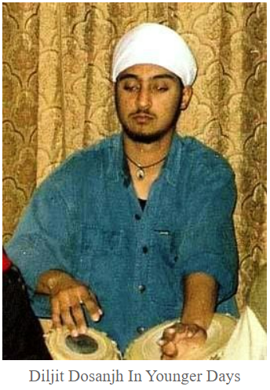

Introduction
Daljit Singh Dosanjh, also know as Diljit Dosanjh, is once of the many famous singer of Punjab, India. He is also an insperational Actor and Writer. His Date of Birth is 6th January 1984 and his Birthplace is Dosanjh Kalan, Jalandhar, Punjab, India. But his hometown is Ludhiana, Punjab, India. He did his schooling from Shri Guru Harkrishan Public School, Ludhiana. From a young age, he got an inclination toeards music and started performing at local gurudwaras.
**REF: https://starsunfolded.com/diljit-dosanjh/
His Career
- He gave his first stage performance at a villavge, for the purpose of engaging the audience; as Master Saleem was late for his Performance.
- In 2000, he made his singing debut with the album 'Ishq Da Uda Ada'.
- His song "Lak 28 Kudi Da" was a mega-hit in which Honey Singh was also featured.
- His performance in the film "Jatt and Juliet" became a turning point in his acting career and the film's sequel was even a bigger hit.
- In 2013, his singing breakthrough came with the song "Proper Patola" ft. Badshah. Moreover, it became the first Punjabi song to be featured on Vevo.
Money Factor
Salary (approx.) Rs.4 crore/film.
Net Worth (approx.) Rs.170 crore.